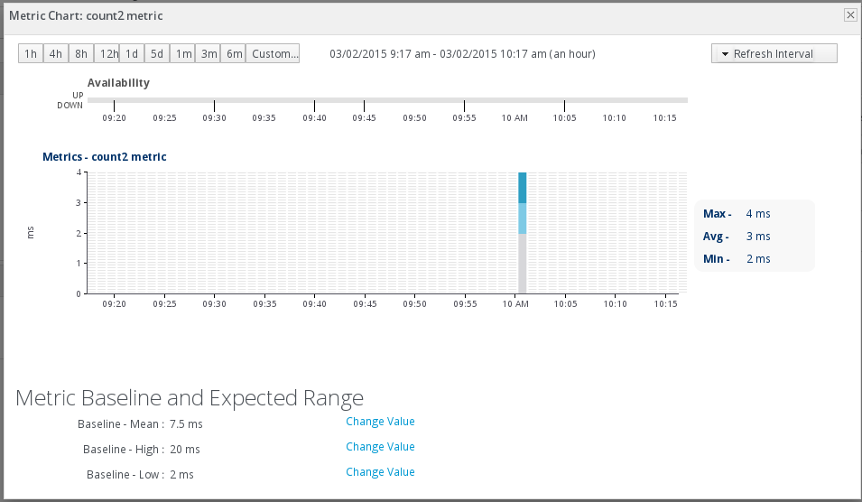

Standalone Wildfly Library
JAM-Metrics are available as a Standalone Wildfly Library (Release 1.0.0.Final). This library can be used to facilitate the creation, record and monitoring of metrics for any deployment on Wildfly Server. This is done by annotating any class or method with the annotations @Metric and @DBStore. An example of usage can be found under the folder ApplicationMetricsApiTest. Deploy the generated .war file on the Wildfly server to see the metrics being printed.
For example, if we annotate the countMethod method below, with the annotations @Metric(fieldName = {"count","count2"}, groupName="myTestGroup") and @DBStore(groupName = "myGroup", queryUpdateDB = {"StoreDBMetric","count"}, statementName = "statement_1") :
@Stateful
@LocalBean
public class MetricsApiSessionBean {
private int count = 0;
private int count2 = 0;
public MetricsApiSessionBean() {
}
@Metric(fieldName = {"count","count2"}, grouptName = "myGroup") // The annotation parameter groupName is used for grouping
// of metrics under the same metric-properties configuration.
@DBStore(groupName = "myGroup", queryUpdateDB = {"StoreDBMetric","count"}, statementName = "statement_1") // Annotation that
// enables the storage of JAM-Metrics in the database
public int countMethod() {
count++;
count2 += 2;
return count;
}
}and we call the method countMethod two sequential times :
public class PrintMetrics extends HttpServlet {
@EJB
private MetricsApiSessionBean metricsApiSessionBean;
private String grouptName = "myGroup"; // The annotation parameter groupName is used for grouping of metrics under
// the same metric-properties configuration.
protected void processRequest(HttpServletRequest request, HttpServletResponse response)
throws ServletException, IOException {
response.setContentType("text/html;charset=UTF-8");
initializeMetricProperties(); // Using MetricsPropertiesApi to configure JAM-Metrics. All the
// configuration needed is done inside the deployment (no xml configurations needed, no System Properties to be set)
try (PrintWriter out = response.getWriter()) {
out.println("<" + "!DOCTYPE html" + ">");
out.println("<" + "html" + ">");
out.println("<" + "head" + ">");
out.println("<" + "title" + ">" + "Servlet PrintMetrics" + "");
out.println("<" + "/head" + ">");
out.println("<" + "body" + ">");
out.println("Servlet PrintMetrics : ");
metricsApiSessionBean.countMethod();
metricsApiSessionBean.countMethod();
out.println(MetricsCacheApi.printMetricsCache(groupName));
out.println("Successful Run ..");
out.println("<" + "/body" + ">");
out.println("<" + "/html" + ">");
}
}
private void initializeMetricProperties() {
HashMap rhqScheduleIds = new HashMap();
rhqScheduleIds.put("count", "11401"); // 1st Metric-Field name - Equivalent Schedule Id (Retrieved from the RHQ
// resources - http://RHQserverUrl:7080/rest/resource?ps=99999)
rhqScheduleIds.put("count2", "11402"); // 2nd Metric-Field name - Equivalent Schedule Id (Retrieved from the RHQ
// resources - http://RHQserverUrl:7080/rest/resource?ps=99999)
MetricProperties metricProperties = new MetricProperties();
metricProperties.setRhqMonitoring("true"); // Enabling the RHQ Monitoring operation.
metricProperties.setCacheStore("true"); // Enabling the Cache Storage operation.
metricProperties.setRhqServerUrl("lz-panos-jon33.bc.jonqe.lab.eng.bos.redhat.com"); // Adding the RHQ server URL.
metricProperties.setRhqScheduleIds(rhqScheduleIds); // Adding the RHQ Schedule Ids of the metrics we want to monitor.
metricProperties.setDatabaseStore("false"); // Disabling the Database Storage operation.
MetricsPropertiesApi.storeProperties(groupName, metricProperties);
}
. .
} then the field-metrics will be automatically stored in our metrics cache :
Metric Field Name : count (of instance org.jam.metrics.MetricsApiSessionBean@43f98edf)
Value : 1
Value : 2
Metric Field Name : count2 (of instance org.jam.metrics.MetricsApiSessionBean@43f98edf)
Value : 2
Value : 4
and they will be monitored via RHQ :

In addition, if we enable and configure database storage then metric count will be stored in the database :
ID METRIC_NAME METRIC_VALUE METRIC_INSTANCE RECORD_TIME
1 count 1 org.jam.metrics.MetricsApiSessionBean@43f98edf 2015-07-30 16:01:35
2 count 2 org.jam.metrics.MetricsApiSessionBean@43f98edf 2015-07-30 16:01:35
An example of usage about database storage can be found under the folder ApplicationMetricsApiTest6.